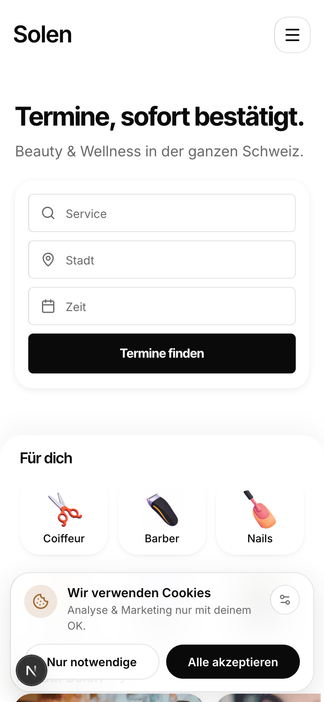
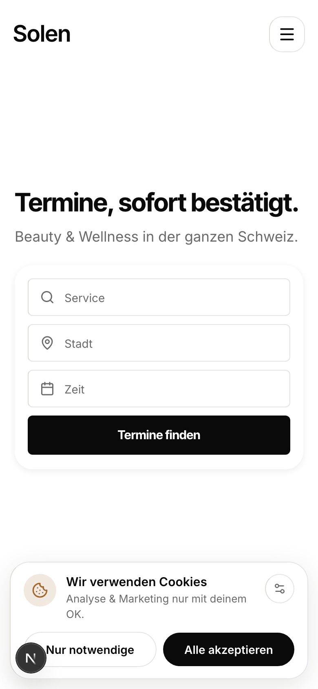
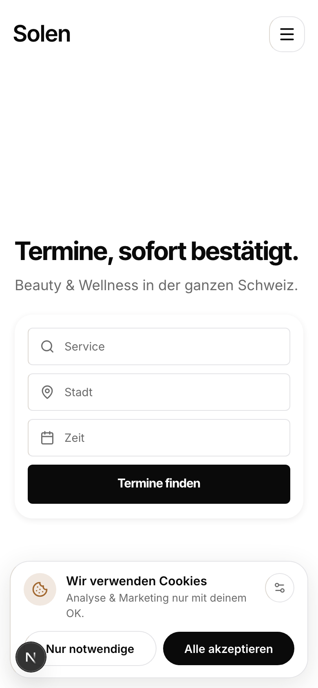

Each frame is exactly one phone screen (390 x 844) of your real homepage. The dashed line is the true middle of the screen; the dot marks the centre of the search card. Nothing is redrawn, only the hero's vertical centring changed.
The card's centre sits at 41 percent of the first screen, i.e. above the middle. That is not an accident: a dated decision (V3-D348) cut the hero's top padding specifically "so the search card rises toward the fold", which also lets the next section peek into the first screen at 523px and tell the eye there is more below.
So "more in the middle" means reversing that trade on purpose: the card drops toward the centre, the hero takes the whole first screen, and the peek disappears. Both effects are real and measured below.



Nothing below the hero changes: the 32px cadence still runs section to section. The one gap that changes is the hero's own, and it changes for free, because the hero now ends at the fold instead of at 475px. The cost is height: the page goes 4253 to 4622, and the "there is more below" peek is gone, which is the only real argument for keeping the card high.
| Option | Card centre | Hero height | Next section starts | Page height |
|---|---|---|---|---|
| a, today | 41% | 391 | 523 (peeks) | 4253 |
| c, optical centre | 53% | 760 | 892 | 4622 |
| b, straight centring | 61% | 760 | 892 | 4622 |
Why c is marked: straight centring centres the whole block (headline + sub + card), so the card lands below the middle at 61 percent, which reads low rather than centred. Nudging the block up to about 40 percent of the free space puts the CARD at the middle, which is what you actually asked for.